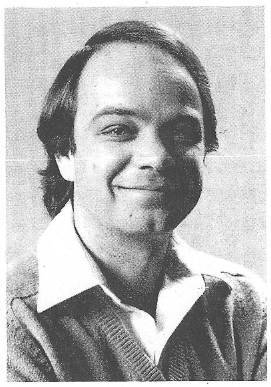
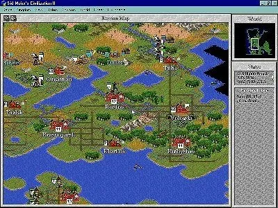
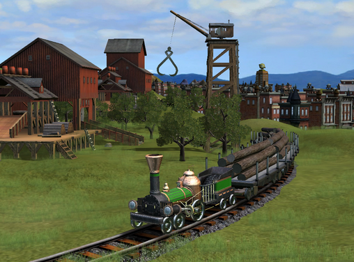
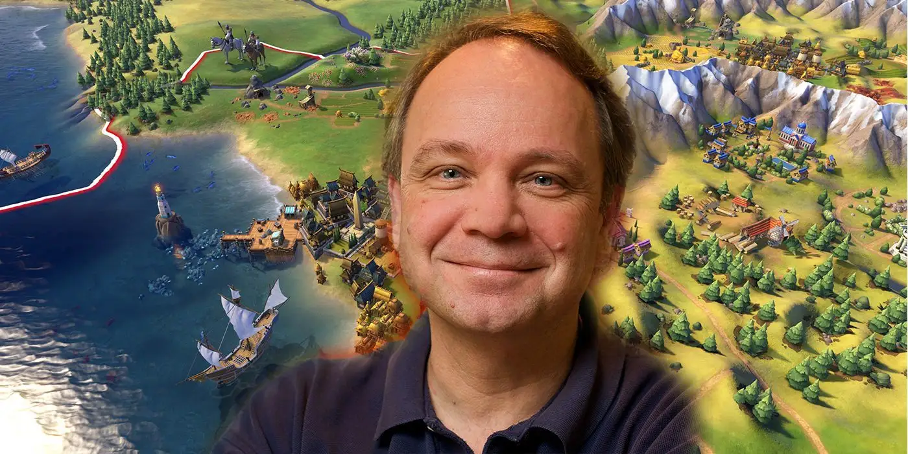

席德梅尔
席德梅尔，本名西德尼·K·“席德”·梅尔（Sidney K. "Sid" Meier），于1954年2月24日出生在加拿大安大略省，职业是游戏程序员、游戏设计师和游戏制作人。 从早期苹果机上的原始游戏到如今超级PC上的震撼巨作，席德走完了电脑游戏业所走过的所有历程，对行业发展作出了巨大贡献。
个人荣誉
- 1996年，GameSpot将梅尔列为“有史以来电脑游戏中最具影响力的人”的榜首。
- 1997年，《电脑游戏世界》将他列为游戏设计“有史以来最具影响力的电脑游戏人物”榜单上的第一名。
- 1999年，他成为第二位入选互动艺术与科学学院名人堂的人。第一位是宫本茂。
- 2008年，他在2008年游戏开发者大会上获得了终身成就奖。
- 2009年，他在IGN的“史上最佳游戏创作者”名单中排名第二。
- 2017年，他被金摇杆奖授予终身成就奖。
事业发展
1982年，席德·梅尔和比尔共同创办MicroProse。由于人员捉襟见肘，业界也没有经验可以借鉴，梅尔经常独自负责一款游戏全部的设计和编程。
1986年，MicroProse开始在其游戏的命名、广告中使用席德梅尔（Sid Meier's）的名字和头像，以此来吸引更多的玩家。
1993年，MicroProse由于严重的财政危机，被Spectrum HoloByte合并。
1996年，文明2大卖，但Spectrum依然亏损严重。Spectrum大量裁撤MicroProse的岗位，整合了MicroProse大部分业务，同时还将公司改名MicroProse。
梅尔和一些同事对这些决定极为不满。1997年，他们选择离开公司，共同成立Firaxis Games。
1998年，MicroProse被业界巨头孩之宝收购。但孩之宝很快发现这是个亏本生意。 1999年，孩之宝关闭、解散了原Spectrum HoloByte的所有部门，并开始逐渐委托Firaxis Games制作海盗和文明等诸多续作。
现在的席德梅尔已经不再活跃在第一线，而仅仅是作为一个创意总监，同时促成公司的多个项目。
主要作品
席德梅尔主创或参与设计、制作的游戏，总计超过50款。
- 1981年，山寨太空侵略者（Faux Space Invaders），在当地一家小商铺卖了不到10份。
- 1982年，一级方程式赛车（Formula 1 Racing），席德梅尔的第一款商业游戏。
- 1982年，弗洛伊德的丛林（Floyd of the Jungle）。
- 1983年，弗洛伊德的丛林2（Floyd of the Jungle2）
- 1985年，猎鹰（F-15 Strike Eagle）。
- 1987年，席德梅尔的海盗（Sid Meier's Pirates），第一款加入席德梅尔名字的游戏。
- 1989年，猎鹰（F-15 Strike Eagle2）。
- 1990年，铁路大亨（Sid Meier's Railroad Tycoon）。
- 1991年，文明（Sid Meier's Civilization）。梅尔最成功的作品之一，它被译为多种语言，销量超过6百万份。文明的大部分工作是梅尔一人完成的，直到后期才逐渐增加到17人。 
- 1995年，文明重制版（Sid Meier's CivNet），文明系列第一次支持联网功能。
- 1996年，文明2（Sid Meier's Civilization II），主设计师是29岁的布莱恩。
- 1999年，席德梅尔的半人马星座（Sid Meier's Alpha Centauri）。这个游戏设定在一个完全不同的世界，以思想派别替代文明的划分，有着独特的经济、军事和外交设计。
- 2001年，文明3（Sid Meier's Civilization III）。
- 2004年，席德梅尔的海盗！（Sid Meier's Pirates!）。
- 2005年，文明4（Sid Meier's Civilization IV）。
- 2006年，席德梅尔的铁路！（Sid Meier's Railroads!）。 Take two解散PopTop Software小组，并将其合并进Firaxis公司。 52岁的梅尔再次成为了铁路大亨系列的负责人，这一作也是铁路大亨3的续作。 
- 2010年，文明5（Sid Meier's Civilization V）。
- 2016年，文明6（ Sid Meier's Civilization VI）。截至2016年，整个文明系列销量已经超过3500万份，有记录的玩家游玩时间总计超过了10亿小时。
生平轶事
1975年，梅尔在学校的实验室制作的第一个游戏demo，只是一个简单的井字棋。但那个时候，他从没想过自己会以此为生。梅尔的第一份工作，是为一家百货商店设计收银系统。
席德梅尔在作为一位优秀的游戏设计师的同时，更是一位闻名游戏圈的玩家。
直到1979年，他入手当时最新款的Atari 800，才发现自己也能制作可玩的电子游戏。他的第一款游戏跟《太空入侵者》非常相似。
席德梅尔并不总是那些标有他名字游戏的主设计师。例如，在席德·梅尔的半人马星座和席德·梅尔的殖民帝国，布莱恩·雷诺兹才是第一设计师。在文明IV中，第一设计师是索伦·约翰逊。
他曾经在媒体采访中说，在他开始正式制作游戏的时候，既没有游戏设计师这个职业，也没有游戏分类这个概念存在，他和他的同行们都是在混沌的蛮荒之中，尝试着各种匪夷所思的奇思妙想。
虽然他的游戏经常是关于暴力时间和地点的，但从来没有任何血腥和性元素，他尽可能的避免在游戏当中表现出类似的元素。在《海盗》中，玩家可以在船沉没之前跳船；在《铁路大亨》中，当火车驶向一座断桥时，售票员可以在最后时刻跳出火车逃生。相反，他的游戏帮助非常详尽，并且通常伴随着大量的知识百科。
丹尼斯（Dennis Shirk）在2016年的发言中说，62岁的梅尔有时还是会到办公室，说他做了一个新的游戏demo，让大家试试有没有实装的价值。
